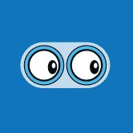 DigitalEyes Market Solana 的第一个开放且无需许可的 NFT 市场！交易任何 NFT，安全有保障！NFT 根据收藏通过我们的创建者门户提交的薄荷哈希列表进行身份验证，而标记为“未
DinoBabies Dino Babies in Space 不仅仅是一个 NFT 项目，它是由 Matt Bolinger 创作的社区首部动画系列。 5,500 个 Genesis Dino Babies 中的每一个都允许其持有者参与 Dino Babies in Space 社区金库，并对节目制作的各个方面
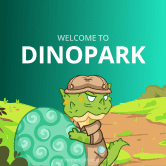 DINOPARK TOKEN 来自 JDI Yield 的创建者 (https://jdiyield.com) 恐龙公园是一种通货紧缩的被动回报代币。只需将 $DINOP 放在您的钱包中，您就会看到您的硬币数量增加。每笔交易都会自动将代币分发给所有
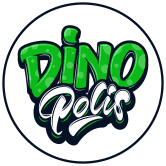 DinoPolis DinoPolis 是一个 Mining NFT 项目，也表示为 Play-To-Earn 游戏。 项目让任何人都有机会成为加密行业的一部分，并在全球加密货币 HashRate 中拥有自己的份额。它由许多基础设施元素组成，其
DinoPool DinoPool Finance 的全部重点是建立一个真正的跨链算法稳定币协议，并在整个 DeFi 生态系统中具有真实的用例。 DinoPool 的机制与 ToxicDeer Finance 的机制相似，只是底层的挂钩代币不同。在 ToxicDeer
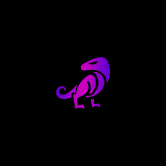 Dinosaur Finance Dinosaur Finance 是 Polygon 上的一个相当世代的收益农场，它允许以可持续和有利可图的农业收益永久增加价格！ 我们的目标是在 Polygon 上构建一个一体化的 defi 平台，其中包含不同的
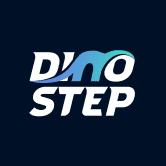 DinoStep DinoStep.App 是通过虚拟恐龙赚取 App 的第一步 DinoStep 对于希望加深与虚拟恐龙之间的联系同时也以有意义的方式赚钱的个人来说是一个很好的项目。我们是第一个与 Digital Dinosaur 密切相
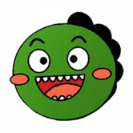 DinoSwap DinoSwap 是一项 DeFi 服务，作为币安智能链上的智能合约运行。您可以通过质押 DINO 代币或其他知名代币（例如：BNB、ETH、BTCB、BUSD、USDT、US
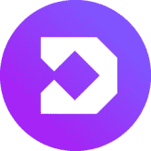 DINT Finance DeFi 平台是一个 Uniswap 分叉，它托管一个具有集成环境的高质量去中心化交换交易所，ERC-20 和 BEP-20 代币可以在该环境中上市、交换、汇集、质押、耕种和烘焙（
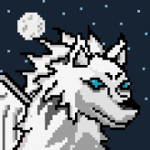 DireWolves Dire Wolves 是 2000 个随机生成的 NFT 碎片的集合。我们茁壮成长，为我们的持有者带来实用性和价值。加入队伍，探索仅限会员的活动、狼窝、Dire DAO 以及更多即将到
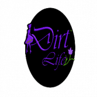 DirtLifeNFTs & Gaming $MFlateable MemeFlate 项目展示了它的第一个 NFT 和游戏市场网站 DirtLifeNFTs & Gaming。 MemeFlate 品牌的这一令人兴奋的部分将发布一个独特的 3000 个 NFT 集合，持有者可以访问诸如 Chainlink 集成 NFTstaking 之
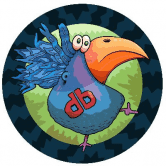 Dirtybird Flight Club Dirtybird 于 2005 年开始作为地下唱片公司，但标志的历史始于中学时的 Claude VonStroke，当时他正在画愚蠢的小鸟，希望能让他的兄弟姐妹发笑。你在这里看到的
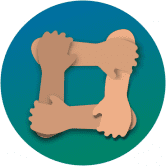 DistributedTown (DiTo) DistributedTown 是协作经济学的新标准。我们正在建立一个相互关联的、自主的社区网络。 它允许任何人加入或创建自己的 - 它基于 DiTo 相互信用和称为 SkillWallet ID 的通用登录。 在我
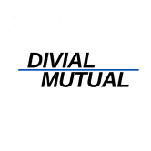 Divial Mutual Divial Mutual 是 DeFi 的保险。由人制造，由人驱动。 DeFi 和更具体的 BSC 就像我们所说的黑暗森林。 确保开始赚取我们的 DVL 代币并保护 100% 的资金！ 预售现已开启！ 如果您在移动
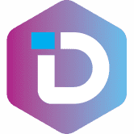 DKT DAPP DKT SWAP 允许任何人在币安智能链上交换资产支持代币和合成代币。 BEP20 代币可以通过与流动性池交互以去中心化的方式进行交换。用户可以将任意一对 BEP20 代币放入相
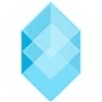 Dlease BuildTeam 的旗舰产品 Dlease.io 是首个 Hive Power 委托租赁市场，于 2017 年年中发布，旨在将委托人与希望租用质押委托证明 (DPOS) 资产实用程序的用户联系起来提升他们的职位，通过更大
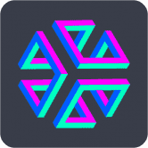 DLUX Decentralized Limitless User eXperiences 是一个 XR 友好的前端，适用于发布到 IPFS 的 dApp。凭借其自己的代币化经济，任何帖子都可以使用 Hive 发布，并在 HIVE 和 DLUX 中获得奖励。它有一个创新的
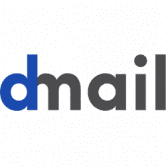 dmail 新互联网上的电子邮件 Dmail 是一個類似於 Snapmail 的概念，這個想法是從 Delicious.com 內部人員自身的親身經歷而來，他們想**透過 Email 來發送敏感資訊，但又希望可以獲得更好的
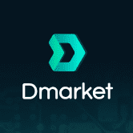 Dmarket DMarket 市场使数百万游戏玩家和电子竞技爱好者能够使用一整套先进的游戏技术和金融科技功能（包括 Target/Bid、Instant Sale 和 DMarket Circular Excha
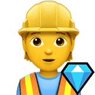 Dmd.Finance Dmd.finance 是 EOS 上的第一个收益农业，这表明了它对 YFI 的尊重。没有预挖，没有创始人股份，没有VC利益，每个参与者平等。DMD钻石（dmd.finance）
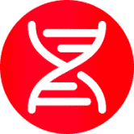 DNA Dollar $DNA 算法代币是快速发展的生态系统的支柱，旨在带来流动性。Cronos 上的第一个算法稳定币，通过铸币税与 1 美元的价格挂钩。- 将 DNA LP 分解为 DNA 和 USDC 将
DogCake Finance DogCake 是最新一代的 Yield Farm，奖励 BNB 为赢得买家和币安智能链上独特的 Anti-bot 系统。DogCake 推荐是一个独特的链上推荐计划，让用户无需存入任何代币即可
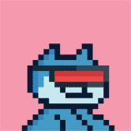 Doge Capital 欢迎低音炮！ Doge Capital 是 Solana 区块链上 5000 个可爱的 24x24 像素艺术收藏品的集合。持有 Doge Capital 可授予 Woof 俱乐部的会员资格和所有者的独家特权。猴子和猿猴玩得太久了，所以
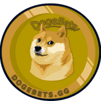 DogeBets DogeBets.gg 是 BSC 上的点对点投注 dApp。该项目的核心重点是公平、准确的价格预测游戏。 简单的规则玩！在接下来的 5 分钟内，您选择的硬币的价格会上涨还是下跌
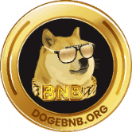 DogeBNB DogeBNB 代币 ($DogeBNB) 是一种由币安智能链提供支持的 meme 货币。 DogeBNB 为大众带来币安智能链的好处和创新。 在 Julpad 的首次 Dex 发行期间，70% 的供应分配给了社区。 公平发射证明
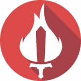 Ember Sword 终极沙盒 MMORPG 在 Ember Sword 中，你做什么以及什么时候做完全取决于你！机械上强大且知识渊博将使您在Thanabus的月球上获得许多胜利。 有意义的最终游戏内
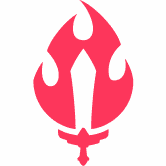 Ember Sword Badge Ember Sword 是一款基于浏览器的免费 MMORPG，发生在玩家驱动的反乌托邦幻想世界中，具有无阶级和快节奏的战斗系统。 Ember Sword 由富有想象力的艺术家、工程师和
Ember Sword Land Ember Sword 是一款基于浏览器的免费 MMORPG，发生在玩家驱动的反乌托邦幻想世界中，具有无阶级和快节奏的战斗系统。 Ember Sword 由富有想象力的艺术家、工程师和
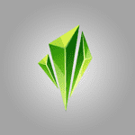 Emerald Swap Emerald Swap 是一个建立在币安智能链上的收益农场，由经验丰富的团队开发，成为您在 DeFi 中的第一选择。 （即将在 Fantom 上发布）币安智能链 (BSC) 解决了以太坊网络上存在的
Emoji Funny Farm Emoji Funny Farm 是一个运行在 Polygon 区块链上的以价值为导向、经济上可持续的去中心化混合收益优化器（收益农场和收益聚合器）。 我们为 Polygon Network 用户、LP 提供者和质押者
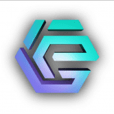 Empire NFT Marketplace 作为 Empire Token 用例帝国的第一个，Empire NFT 市场是一个用户友好的平台，用于交易不可替代的代币 (NFT)，包括艺术、音乐和视频等。这是有史以来第一
EmpireDEX EmpireDEX 是一个多链 DEX 生态系统，为融入 EmpireDEX 生态系统的项目提供全套集成和开发服务。我们通过我们的桥梁、去中心化交易所、农业基础设施、Launchpad 和
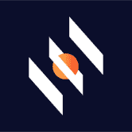 Emporium.Finance Emporium.Finance 由 Crypto Emporium 提供，是一个高收益流动性挖矿平台，将运行 8 周。 这是在点对点仅加密货币市场和社区治理奖励计划启动之前分发 CEFI 代币的预发布活动。 Emporium.Finance 是一个链